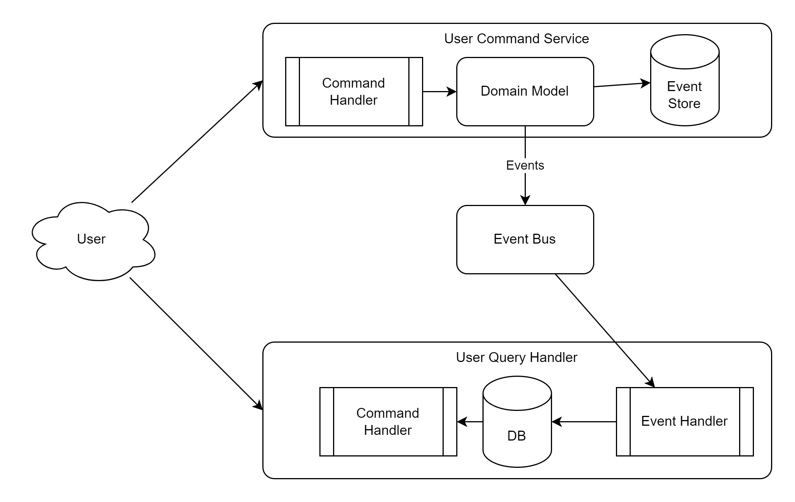
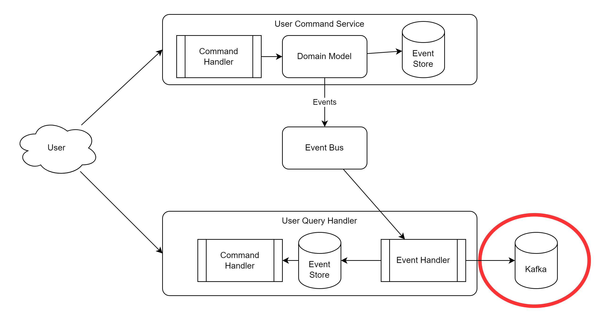
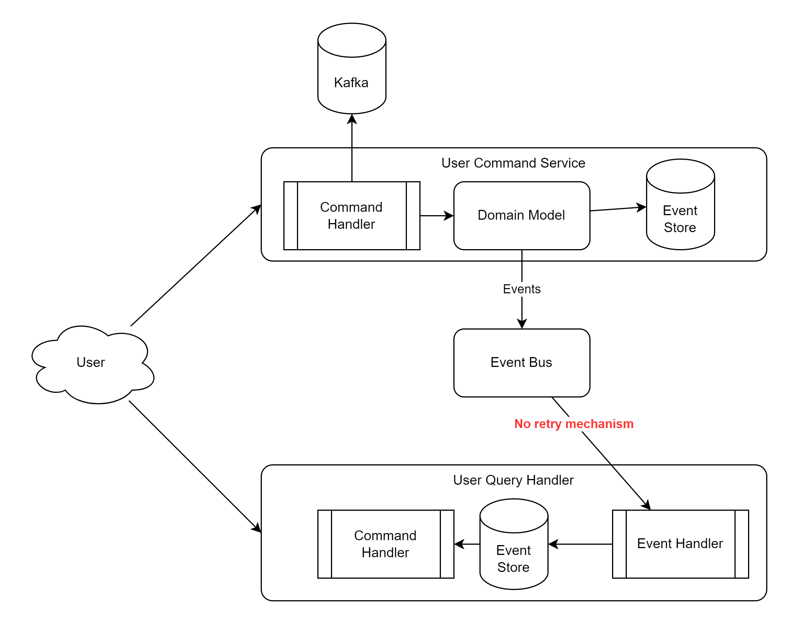
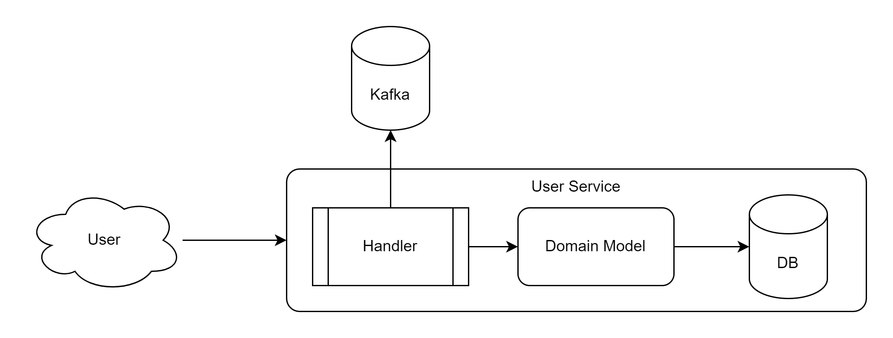

CQRS - EventSourcing - Implementation

Eventual consistency
- "eventual everything will be consistent"
- event processing is async
- timespan between EventStore update and Database update
CQRS - EventSourcing - Kafka

Current implementation in the WPS

Current implementation in WPS without EventStore
